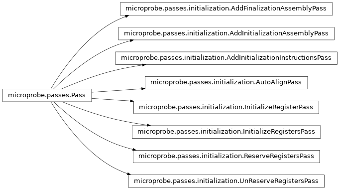

microprobe.passes.initialization
microprobe.passes.initialization module
Classes
|
AddFinalizationAssemblyPass pass. |
|
AddInitializationAssemblyPass pass. |
|
AddInitializationInstructionsPass pass. |
|
AutoAlignPass pass. |
|
InitializeRegisterPass pass. |
|
InitializeRegistersPass pass. |
|
ReserveRegistersPass pass. |
|
UnReserveRegistersPass pass. |
Classes diagram
